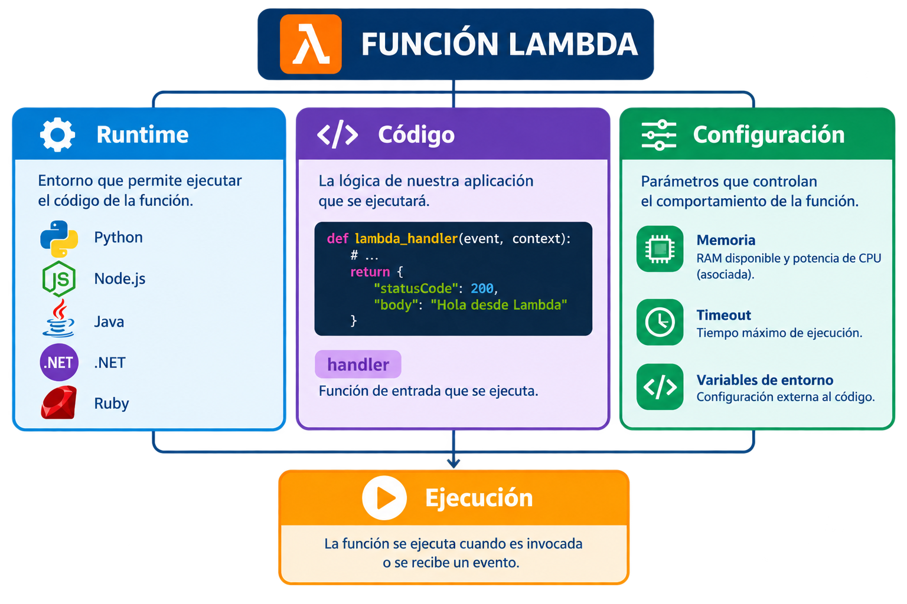
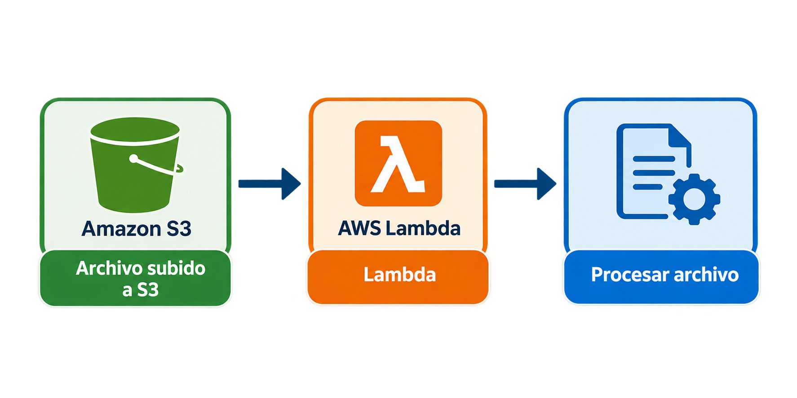
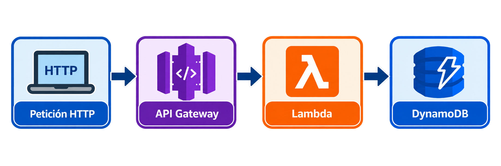
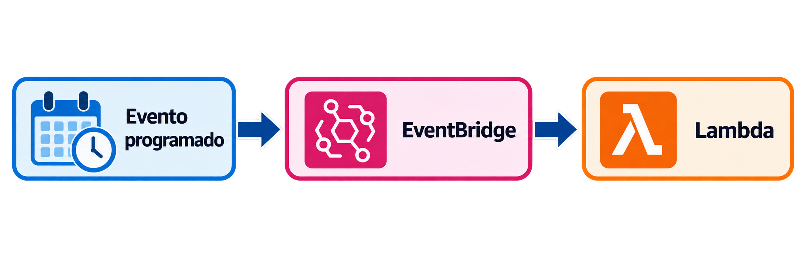
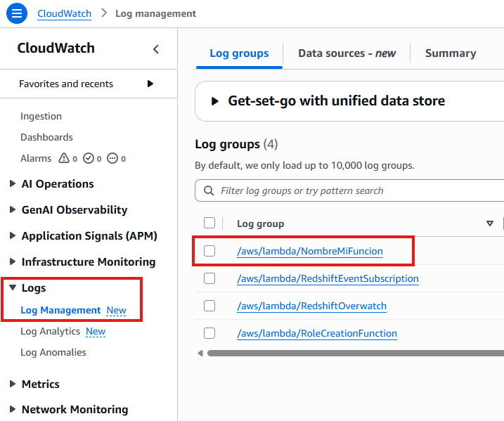
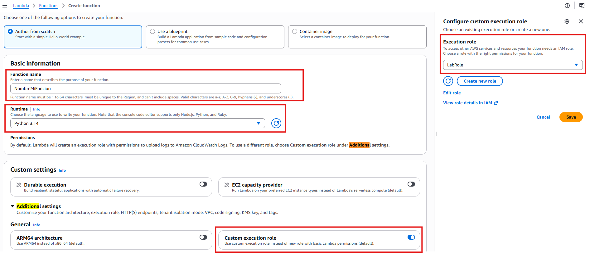
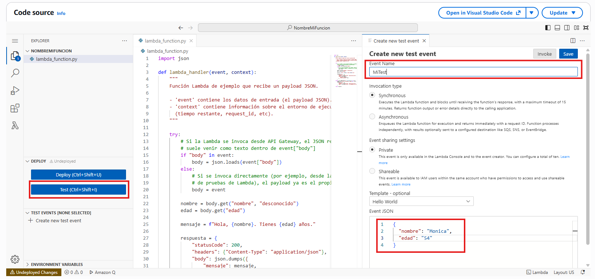
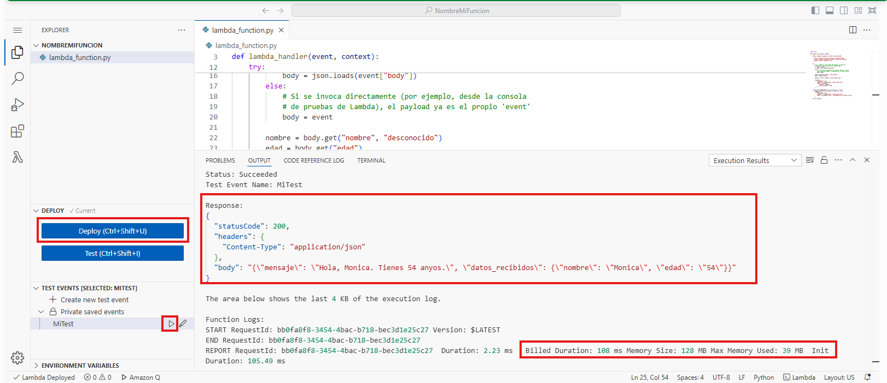

Funciones Lambda.¶
-
Servicio de computación serverless en el que se ejecuta código sin tener que aprovisionar ni administrar servidores.
-
El coste se basa principalmente en la duración de ejecución y la RAM consumida para el procesamiento de cada petición.
Es un servicio que nos permite ejecutar código sin tener que preocuparnos del entorno de programación ni de la infraestructura.
Serverless
No significa que no existan servidores, si no que el proveedor gestiona los servidores y nosotros no tenemos que administrarlos."
Conceptos de una función lambda.¶

-
Runtime: Es el entorno de ejecución, básicamente para nosotros será el lenguaje de programación y su versión.
-
Handler: Es la función que se ejecuta al invocar al código lambda.
🔥 event: Datos recibidos (payload). Por ejemplo un fichero JSON.
🔥 context: Información sobre el entorno de ejecución (tiempo restante, request_id, etc).
Una función lambda no es un código que ejecutamos, si no que se ejecuta como respuesta a un evento.
-
Pueden ejecutarse concurrentemente cientos de invocaciones de una función lambda.
-
AWS asigna potencia de CPU de forma proporcional a la memoria configurada. Actualmente Lambda permite configurar entre 128 MB y 10.240 MB.
-
El timeout por defecto es de 3 segundos y puede configurarse hasta 15 minutos para las funciones Lambda tradicionales.
-
Existe un almacenamiento volátil /tmp que puede configurarse entre 512 MB y 10.240 MB.
Ejemplos Teóricos:¶
- Procesamiento de imágenes desde un S3.

- Procesar peticiones de páginas webs (API Gateway) y posteriormente almacenarlas en una base de datos.

- Programar (EventBridge) que el código se ejecute a ciertas horas, por ejemplo hacer una copia de seguridad a las 02:00 am.

Tipos de Invocaciones.¶
Síncrona.¶
-
El elemento que genera la petición a la función lambda espera la respuesta.
-
Por ejemplo en el uso de una API Gateway con una web.
Asíncrona.¶
-
El emisor de la petición no espera una respuesta.
-
Por ejemplo un S3 que manda ficheros para que sean procesados.
CloudWatch.¶
-
Se pueden ver los registros (logs) de todas las peticiones que solicitan la ejecución de la función lambda.
-
Aporta visibilidad sobre depuración de errores que pueden estar ocurriendo.

Ejemplo Práctico desde AWS.¶
1. Creamos una función Lambda:¶
-
Nombre de la Función.
-
Lenguaje de Programación.
-
Especificar nuestro IAM (usuario): LabRole.

2. Programamos la Función.¶
En el siguiente ejemplo la función va a recibir un payload con los valores de "nombre" y "edad" y devolverá un saludo.
import json
def lambda_handler(event, context):
"""
Función Lambda de ejemplo que recibe un payload JSON.
- 'event' contiene los datos de entrada (el payload JSON).
- 'context' contiene información sobre el entorno de ejecución
(tiempo restante, request_id, etc).
"""
try:
# Si la Lambda se invoca desde API Gateway, el JSON real
# suele venir como texto dentro de event["body"]
if "body" in event:
body = json.loads(event["body"])
else:
# Si se invoca directamente (por ejemplo, desde la consola
# de pruebas de Lambda), el payload ya es el propio 'event'
body = event
nombre = body.get("nombre", "desconocido")
edad = body.get("edad")
mensaje = f"Hola, {nombre}. Tienes {edad} anyos."
respuesta = {
"statusCode": 200,
"headers": {"Content-Type": "application/json"},
"body": json.dumps({
"mensaje": mensaje,
"datos_recibidos": body
})
}
except (json.JSONDecodeError, AttributeError) as error:
logger.error("Error al procesar el JSON: %s", error)
respuesta = {
"statusCode": 400,
"headers": {"Content-Type": "application/json"},
"body": json.dumps({"error": "El payload no es un JSON válido"})
}
return respuesta
3. Creamos un Test.¶
Es importante crear un payload de prueba y lanzarlo para ver que nuestro código se ejecuta correctamente.

{
"nombre": "Monica",
"edad": "54"
}
4. Hacemos deploy para que los cambios surjan efecto.¶
- Podemos ejecutar nuestro Test para comprobar que todo es correcto.

- También podemos comprobar cuanto tiempo costó lanzar este código, pues el cobro será relativo a dicho tiempo.